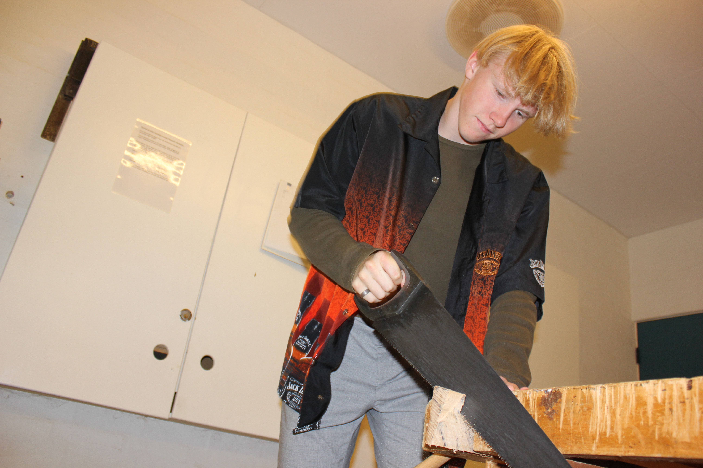
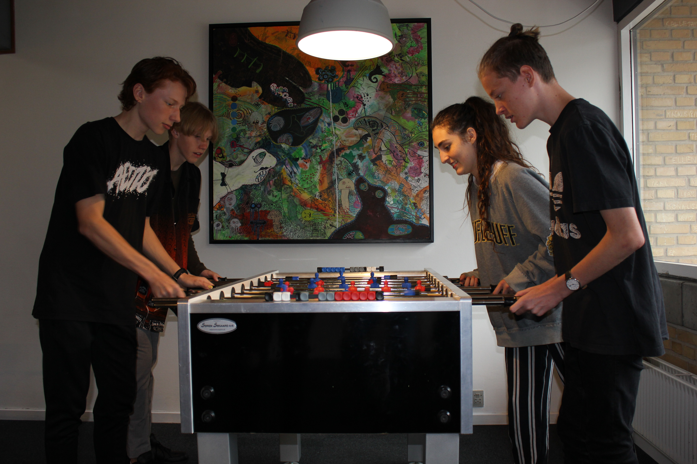
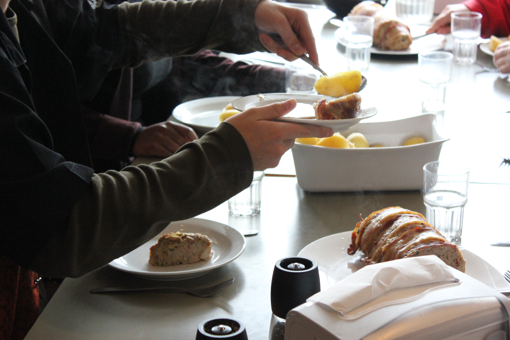
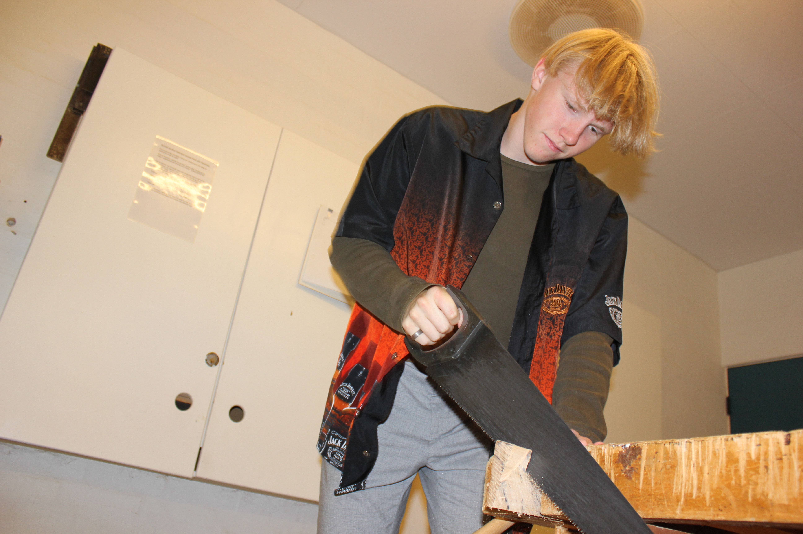
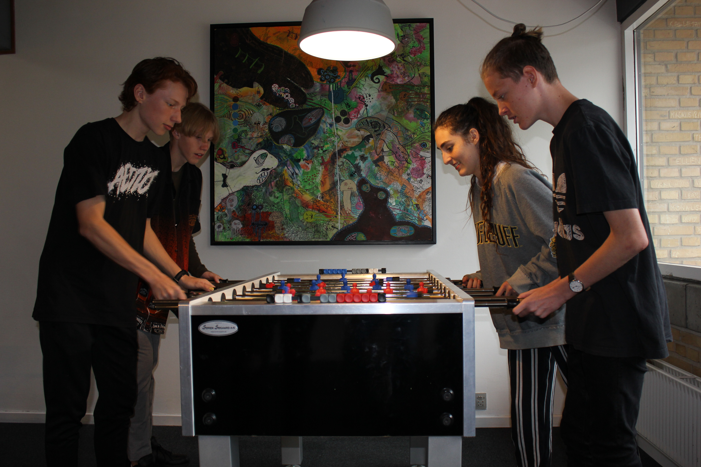
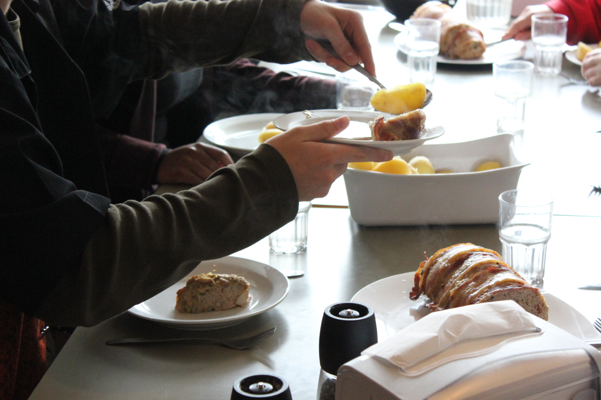

#samtale #medbestemmelse
#fællesskab #ligeværd
#vierEriksminde
Skolen råder over en masse faciliteter i en lang række bygninger.
Her er skolens nyeste del, hvor der både er undervisning og værelser.
På skolen har vi en masse redskaber til både undervisning og fritid.
Her ses eksempelvis sløjdlokalet, hvor vi har alverdens redskaber.
I fritiden hygges der på skolen.
Her er en række elever ved at kæmpe i et spil bordfodbold!
Maden på skolen hjælpes vi ad om at lave!
I køkkenet står en kok, men eleverne får også mulighed for at hjælpe til.